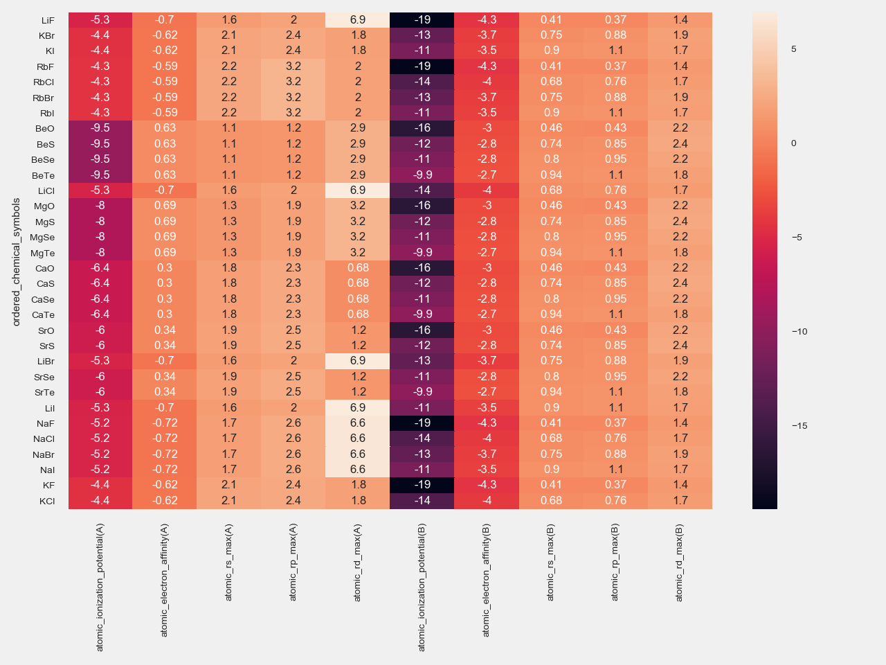

Creating and loading materials science datasets¶
Before performing any data analysis, pre-processing steps (e.g. descriptor calculation) are often needed to transform materials science data in a suitable form for the algorithm of choice, being it for example a neural network. This pre-processing is usually a computationally demanding step, especially if hundred of thousands of structures needs to be calculated, possible for different parameters setting.
Since hyperparameter tuning of the regression/classification algorithm typically requires to run the model several times (for a given pre-processed dataset), it is thus highly beneficial to be able to save and re-load the pre-processed results in a consistent and traceable manner.
Here we provide functions to pre-process (in parallel), save and subsequently load materials science datasets; this not only eases the traceability and reproduciblity of data analysis on materials science data, but speeds up the prototyping of new models.
Example: diffraction fingerprint calculation for multiple structures¶
The code below illustrates how to compute a descriptor for multiple crystal structures using multiple processors, save the results to file, and reload the file for later use (e.g. for classification).
As illustrative example we calculate the two-dimensional diffraction fingerprint [1] of pristine (e.g. perfect) and highly defective (50% of missing atoms) crystal structures. In particular, the four crystal structures considered are: body-centered cubic (bcc), face-centered cubic(fcc), diamond (diam), and hexagonal closed packed (hcp) structures; more than 80% of elemental solids adopt one of these four crystal structures under standard conditions.
The steps performed in the code below are the following:
- define the folders where the results are going to be saved
- build the four crystal structures (bcc, fcc, diam, hcp) using the ASE package
- create a pristine supercell using the function
ai4materials.utils.utils_crystals.create_supercell - create a defective supercell (50% of atoms missing) using the function
ai4materials.utils.utils_crystals.create_vacancies - calculate the two-dimensional diffraction fingerprint for all (eight) crystal structures using
ai4materials.wrappers.calc_descriptor - save the results to file
- reload the results from file
- generate a texture atlas with the two-dimensional diffraction fingerprints of all structures and write it to file.
Implementation details of the two-dimensional diffraction fingerprint can be found at
ai4materials.descriptors.diffraction2d.
from ase.spacegroup import crystal
from ai4materials.descriptors.diffraction2d import Diffraction2D
from ai4materials.utils.utils_config import set_configs
from ai4materials.utils.utils_config import setup_logger
from ai4materials.utils.utils_crystals import create_supercell
from ai4materials.utils.utils_crystals import create_vacancies
from ai4materials.utils.utils_data_retrieval import generate_facets_input
from ai4materials.wrappers import calc_descriptor
from ai4materials.wrappers import load_descriptor
import os.path
# set configs
configs = set_configs(main_folder='./multiple_2d_diff_ai4materials/')
logger = setup_logger(configs, level='INFO', display_configs=False)
# setup folder and files
desc_file_name = 'fcc_bcc_diam_hcp_example'
# build crystal structures
fcc_al = crystal('Al', [(0, 0, 0)], spacegroup=225, cellpar=[4.05, 4.05, 4.05, 90, 90, 90])
bcc_fe = crystal('Fe', [(0, 0, 0)], spacegroup=229, cellpar=[2.87, 2.87, 2.87, 90, 90, 90])
diamond_c = crystal('C', [(0, 0, 0)], spacegroup=227, cellpar=[3.57, 3.57, 3.57, 90, 90, 90])
hcp_mg = crystal('Mg', [(1. / 3., 2. / 3., 3. / 4.)], spacegroup=194, cellpar=[3.21, 3.21, 5.21, 90, 90, 120])
# create supercells - pristine
fcc_al_supercell = create_supercell(fcc_al, target_nb_atoms=128, cell_type='standard_no_symmetries')
bcc_fe_supercell = create_supercell(bcc_fe, target_nb_atoms=128, cell_type='standard_no_symmetries')
diamond_c_supercell = create_supercell(diamond_c, target_nb_atoms=128, cell_type='standard_no_symmetries')
hcp_mg_supercell = create_supercell(hcp_mg, target_nb_atoms=128, cell_type='standard_no_symmetries')
# create supercells - vacancies
fcc_al_supercell_vac = create_vacancies(fcc_al, target_vacancy_ratio=0.50, target_nb_atoms=128, cell_type='standard_no_symmetries')
bcc_fe_supercell_vac = create_vacancies(bcc_fe, target_vacancy_ratio=0.50, target_nb_atoms=128, cell_type='standard_no_symmetries')
diamond_c_supercell_vac = create_vacancies(diamond_c, target_vacancy_ratio=0.50, target_nb_atoms=128, cell_type='standard_no_symmetries')
hcp_mg_supercell_vac = create_vacancies(hcp_mg, target_vacancy_ratio=0.50, target_nb_atoms=128, cell_type='standard_no_symmetries')
ase_atoms_list = [fcc_al_supercell, fcc_al_supercell_vac,
bcc_fe_supercell, bcc_fe_supercell_vac,
diamond_c_supercell, diamond_c_supercell_vac,
hcp_mg_supercell, hcp_mg_supercell_vac]
# calculate the descriptor for the list of structures and save it to file
descriptor = Diffraction2D(configs=configs)
desc_file_path = calc_descriptor(descriptor=descriptor, configs=configs, ase_atoms_list=ase_atoms_list,
desc_file=str(desc_file_name)+'.tar.gz', format_geometry='aims',
nb_jobs=-1)
# load the previously saved file containing the crystal structures and their corresponding descriptor
target_list, structure_list = load_descriptor(desc_files=desc_file_path, configs=configs)
# create a texture atlas with all the two-dimensional diffraction fingerprints
df, texture_atlas = generate_facets_input(structure_list=structure_list, desc_metadata='diffraction_2d_intensity',
target_list=target_list,
sprite_atlas_filename=desc_file_name,
configs=configs, normalize=True)
This are the calculated two-dimensional diffraction fingerprints for all crystal structures in the list :

Example: atomic feature retrieval for multiple structures¶
It was recently shown in Ref. [2] that the crystal structure of binary compounds can be predicted using compressed-sensing technique using atomic features only.
The code below illustrates how to retrieve atomic features, performing the following steps:
- build a list of crystal structure using the ASE package
- retrieve atomic features using the descriptor
ai4materials.descriptors.atomic_features.AtomicFeaturesfor all crystal structures - save the results to file
- reload the results from file
- construct a table
df_atomic_featurescontaining the atomic features using the functionai4materials.descriptors.atomic_features.get_table_atomic_features - write the atomic feature table as csv file
- build a heatmap of the atomic feature table
import sys
import os.path
atomic_data_dir = os.path.abspath(os.path.normpath("/home/ziletti/nomad/nomad-lab-base/analysis-tools/atomic-data"))
sys.path.insert(0, atomic_data_dir)
from ase.spacegroup import crystal
import matplotlib.pyplot as plt
from ai4materials.utils.utils_config import set_configs
from ai4materials.utils.utils_config import setup_logger
from ai4materials.utils.utils_crystals import get_spacegroup_old
from ai4materials.utils.utils_binaries import get_binaries_dict_delta_e
from ai4materials.wrappers import calc_descriptor
from ai4materials.wrappers import load_descriptor
from ai4materials.descriptors.atomic_features import AtomicFeatures
from ai4materials.descriptors.atomic_features import get_table_atomic_features
import seaborn as sns
# set configs
configs = set_configs(main_folder='./dataset_atomic_features_ai4materials/')
logger = setup_logger(configs, level='INFO', display_configs=False)
desc_file_name = 'atomic_features_try1'
# build atomic structures
group_1a = ['Li', 'Na', 'K', 'Rb']
group_1b = ['F', 'Cl', 'Br', 'I']
group_2a = ['Be', 'Mg', 'Ca', 'Sr']
group_2b = ['O', 'S', 'Se', 'Te']
ase_atoms_list = []
for el_1a in group_1a:
for el_1b in group_1b:
ase_atoms_list.append(crystal([el_1a, el_1b], [(0, 0, 0), (0.5, 0.5, 0.5)], spacegroup=225, cellpar=[5.64, 5.64, 5.64, 90, 90, 90]))
for el_2a in group_2a:
for el_2b in group_2b:
ase_atoms_list.append(crystal([el_2a, el_2b], [(0, 0, 0), (0.5, 0.5, 0.5)], spacegroup=225, cellpar=[5.64, 5.64, 5.64, 90, 90, 90]))
selected_feature_list = ['atomic_ionization_potential', 'atomic_electron_affinity',
'atomic_rs_max', 'atomic_rp_max', 'atomic_rd_max']
# define and calculate descriptor
kwargs = {'feature_order_by': 'atomic_mulliken_electronegativity', 'energy_unit': 'eV', 'length_unit': 'angstrom'}
descriptor = AtomicFeatures(configs=configs, **kwargs)
desc_file_path = calc_descriptor(descriptor=descriptor, configs=configs, ase_atoms_list=ase_atoms_list,
desc_file=str(desc_file_name)+'.tar.gz', format_geometry='aims',
selected_feature_list=selected_feature_list,
nb_jobs=-1)
target_list, ase_atoms_list = load_descriptor(desc_files=desc_file_path, configs=configs)
df_atomic_features = get_table_atomic_features(ase_atoms_list)
# write table to file
df_atomic_features.to_csv('atomic_features_table.csv', float_format='%.4f')
# plot the table with seaborn
df_atomic_features = df_atomic_features.set_index('ordered_chemical_symbols')
mask = df_atomic_features.isnull()
fig = plt.figure()
sns.set(font_scale=0.5)
sns_plot = sns.heatmap(df_atomic_features, annot=True, mask=mask)
fig = sns_plot.get_figure()
fig.tight_layout()
fig.savefig('atomic_features_plot.png', dpi=200)
This is the table containing the atomic features obtained using the code above:
| ordered_chemical_symbols | atomic_ionization_potential(A) | atomic_electron_affinity(A) | atomic_rs_max(A) | atomic_rp_max(A) | atomic_rd_max(A) | atomic_ionization_potential(B) | atomic_electron_affinity(B) | atomic_rs_max(B) | atomic_rp_max(B) | atomic_rd_max(B) | |
|---|---|---|---|---|---|---|---|---|---|---|---|
| 0 | LiF | -5.3291 | -0.6981 | 1.6500 | 2.0000 | 6.9300 | -19.4043 | -4.2735 | 0.4100 | 0.3700 | 1.4300 |
| 1 | KBr | -4.4332 | -0.6213 | 2.1300 | 2.4400 | 1.7900 | -12.6496 | -3.7393 | 0.7500 | 0.8800 | 1.8700 |
| 2 | KI | -4.4332 | -0.6213 | 2.1300 | 2.4400 | 1.7900 | -11.2571 | -3.5135 | 0.9000 | 1.0700 | 1.7200 |
| 3 | RbF | -4.2889 | -0.5904 | 2.2400 | 3.2000 | 1.9600 | -19.4043 | -4.2735 | 0.4100 | 0.3700 | 1.4300 |
| 4 | RbCl | -4.2889 | -0.5904 | 2.2400 | 3.2000 | 1.9600 | -13.9018 | -3.9708 | 0.6800 | 0.7600 | 1.6700 |
| 5 | RbBr | -4.2889 | -0.5904 | 2.2400 | 3.2000 | 1.9600 | -12.6496 | -3.7393 | 0.7500 | 0.8800 | 1.8700 |
| 6 | RbI | -4.2889 | -0.5904 | 2.2400 | 3.2000 | 1.9600 | -11.2571 | -3.5135 | 0.9000 | 1.0700 | 1.7200 |
| 7 | BeO | -9.4594 | 0.6305 | 1.0800 | 1.2100 | 2.8800 | -16.4332 | -3.0059 | 0.4600 | 0.4300 | 2.2200 |
| 8 | BeS | -9.4594 | 0.6305 | 1.0800 | 1.2100 | 2.8800 | -11.7951 | -2.8449 | 0.7400 | 0.8500 | 2.3700 |
| 9 | BeSe | -9.4594 | 0.6305 | 1.0800 | 1.2100 | 2.8800 | -10.9460 | -2.7510 | 0.8000 | 0.9500 | 2.1800 |
| 10 | BeTe | -9.4594 | 0.6305 | 1.0800 | 1.2100 | 2.8800 | -9.8667 | -2.6660 | 0.9400 | 1.1400 | 1.8300 |
| 11 | LiCl | -5.3291 | -0.6981 | 1.6500 | 2.0000 | 6.9300 | -13.9018 | -3.9708 | 0.6800 | 0.7600 | 1.6700 |
| 12 | MgO | -8.0371 | 0.6925 | 1.3300 | 1.9000 | 3.1700 | -16.4332 | -3.0059 | 0.4600 | 0.4300 | 2.2200 |
| 13 | MgS | -8.0371 | 0.6925 | 1.3300 | 1.9000 | 3.1700 | -11.7951 | -2.8449 | 0.7400 | 0.8500 | 2.3700 |
| 14 | MgSe | -8.0371 | 0.6925 | 1.3300 | 1.9000 | 3.1700 | -10.9460 | -2.7510 | 0.8000 | 0.9500 | 2.1800 |
| 15 | MgTe | -8.0371 | 0.6925 | 1.3300 | 1.9000 | 3.1700 | -9.8667 | -2.6660 | 0.9400 | 1.1400 | 1.8300 |
| 16 | CaO | -6.4280 | 0.3039 | 1.7600 | 2.3200 | 0.6800 | -16.4332 | -3.0059 | 0.4600 | 0.4300 | 2.2200 |
| 17 | CaS | -6.4280 | 0.3039 | 1.7600 | 2.3200 | 0.6800 | -11.7951 | -2.8449 | 0.7400 | 0.8500 | 2.3700 |
| 18 | CaSe | -6.4280 | 0.3039 | 1.7600 | 2.3200 | 0.6800 | -10.9460 | -2.7510 | 0.8000 | 0.9500 | 2.1800 |
| 19 | CaTe | -6.4280 | 0.3039 | 1.7600 | 2.3200 | 0.6800 | -9.8667 | -2.6660 | 0.9400 | 1.1400 | 1.8300 |
| 20 | SrO | -6.0316 | 0.3431 | 1.9100 | 2.5500 | 1.2000 | -16.4332 | -3.0059 | 0.4600 | 0.4300 | 2.2200 |
| 21 | SrS | -6.0316 | 0.3431 | 1.9100 | 2.5500 | 1.2000 | -11.7951 | -2.8449 | 0.7400 | 0.8500 | 2.3700 |
| 22 | LiBr | -5.3291 | -0.6981 | 1.6500 | 2.0000 | 6.9300 | -12.6496 | -3.7393 | 0.7500 | 0.8800 | 1.8700 |
| 23 | SrSe | -6.0316 | 0.3431 | 1.9100 | 2.5500 | 1.2000 | -10.9460 | -2.7510 | 0.8000 | 0.9500 | 2.1800 |
| 24 | SrTe | -6.0316 | 0.3431 | 1.9100 | 2.5500 | 1.2000 | -9.8667 | -2.6660 | 0.9400 | 1.1400 | 1.8300 |
| 25 | LiI | -5.3291 | -0.6981 | 1.6500 | 2.0000 | 6.9300 | -11.2571 | -3.5135 | 0.9000 | 1.0700 | 1.7200 |
| 26 | NaF | -5.2231 | -0.7157 | 1.7100 | 2.6000 | 6.5700 | -19.4043 | -4.2735 | 0.4100 | 0.3700 | 1.4300 |
| 27 | NaCl | -5.2231 | -0.7157 | 1.7100 | 2.6000 | 6.5700 | -13.9018 | -3.9708 | 0.6800 | 0.7600 | 1.6700 |
| 28 | NaBr | -5.2231 | -0.7157 | 1.7100 | 2.6000 | 6.5700 | -12.6496 | -3.7393 | 0.7500 | 0.8800 | 1.8700 |
| 29 | NaI | -5.2231 | -0.7157 | 1.7100 | 2.6000 | 6.5700 | -11.2571 | -3.5135 | 0.9000 | 1.0700 | 1.7200 |
| 30 | KF | -4.4332 | -0.6213 | 2.1300 | 2.4400 | 1.7900 | -19.4043 | -4.2735 | 0.4100 | 0.3700 | 1.4300 |
| 31 | KCl | -4.4332 | -0.6213 | 2.1300 | 2.4400 | 1.7900 | -13.9018 | -3.9708 | 0.6800 | 0.7600 | 1.6700 |
and this is its corresponding heatmap:
Example: dataset creation for data analytics¶
The code below illustrates how to compute a descriptor (the two-dimensional diffraction fingerprint [1]) for multiple crystal structures, save the results to file, and reload the file for later use (e.g. for classification).
The steps performed in the code below are the following:
- define the folders where the results are going to be saved
- build the four crystal structures (bcc, fcc, diam, hcp) using the ASE package
- create a pristine supercell using the function
ai4materials.utils.utils_crystals.create_supercell - create a defective supercell (50% of atoms missing) using the function
ai4materials.utils.utils_crystals.create_vacancies - calculate the two-dimensional diffraction fingerprint for all (eight) crystal structures
- save the results to file
- reload the results from file
- define a user-specified target variable (i.e. the variable that one want to predict with the classification/regression model); in this case this variable is the crystal structure type (‘fcc’, ‘bcc’, ‘diam’, ‘hcp’)
- create a dataset containing the specified
desc_metadata(this needs to be compatible with the descriptor choice) - save the dataset to file in the folder
dataset_folder, including data (numpy array), target variable (numpy array), and metadata regarding the dataset (JSON format) - re-load from file the saved dataset to be used for example in a classification task
from ase.spacegroup import crystal
from ai4materials.dataprocessing.preprocessing import load_dataset_from_file
from ai4materials.dataprocessing.preprocessing import prepare_dataset
from ai4materials.descriptors.diffraction2d import Diffraction2D
from ai4materials.utils.utils_config import set_configs
from ai4materials.utils.utils_config import setup_logger
from ai4materials.utils.utils_crystals import create_supercell
from ai4materials.utils.utils_crystals import create_vacancies
from ai4materials.wrappers import calc_descriptor
from ai4materials.wrappers import load_descriptor
import os.path
# set configs
configs = set_configs(main_folder='./dataset_2d_diff_ai4materials/')
logger = setup_logger(configs, level='INFO', display_configs=False)
# setup folder and files
dataset_folder = os.path.join(configs['io']['main_folder'], 'my_datasets')
desc_file_name = 'fcc_bcc_diam_hcp_example'
# build crystal structures
fcc_al = crystal('Al', [(0, 0, 0)], spacegroup=225, cellpar=[4.05, 4.05, 4.05, 90, 90, 90])
bcc_fe = crystal('Fe', [(0, 0, 0)], spacegroup=229, cellpar=[2.87, 2.87, 2.87, 90, 90, 90])
diamond_c = crystal('C', [(0, 0, 0)], spacegroup=227, cellpar=[3.57, 3.57, 3.57, 90, 90, 90])
hcp_mg = crystal('Mg', [(1. / 3., 2. / 3., 3. / 4.)], spacegroup=194, cellpar=[3.21, 3.21, 5.21, 90, 90, 120])
# create supercells - pristine
fcc_al_supercell = create_supercell(fcc_al, target_nb_atoms=128, cell_type='standard_no_symmetries')
bcc_fe_supercell = create_supercell(bcc_fe, target_nb_atoms=128, cell_type='standard_no_symmetries')
diamond_c_supercell = create_supercell(diamond_c, target_nb_atoms=128, cell_type='standard_no_symmetries')
hcp_mg_supercell = create_supercell(hcp_mg, target_nb_atoms=128, cell_type='standard_no_symmetries')
# create supercells - vacancies
fcc_al_supercell_vac = create_vacancies(fcc_al, target_vacancy_ratio=0.50, target_nb_atoms=128, cell_type='standard_no_symmetries')
bcc_fe_supercell_vac = create_vacancies(bcc_fe, target_vacancy_ratio=0.50, target_nb_atoms=128, cell_type='standard_no_symmetries')
diamond_c_supercell_vac = create_vacancies(diamond_c, target_vacancy_ratio=0.50, target_nb_atoms=128, cell_type='standard_no_symmetries')
hcp_mg_supercell_vac = create_vacancies(hcp_mg, target_vacancy_ratio=0.50, target_nb_atoms=128, cell_type='standard_no_symmetries')
ase_atoms_list = [fcc_al_supercell, fcc_al_supercell_vac,
bcc_fe_supercell, bcc_fe_supercell_vac,
diamond_c_supercell, diamond_c_supercell_vac,
hcp_mg_supercell, hcp_mg_supercell_vac]
# calculate the descriptor for the list of structures and save it to file
descriptor = Diffraction2D(configs=configs)
desc_file_path = calc_descriptor(descriptor=descriptor, configs=configs, ase_atoms_list=ase_atoms_list,
desc_file=str(desc_file_name)+'.tar.gz', format_geometry='aims',
nb_jobs=-1)
# load the previously saved file containing the crystal structures and their corresponding descriptor
target_list, structure_list = load_descriptor(desc_files=desc_file_path, configs=configs)
# add as target the spacegroup (using spacegroup of the "parental" structure for the defective structure)
targets = ['fcc', 'fcc', 'bcc', 'bcc', 'diam', 'diam', 'hcp', 'hcp']
for idx, item in enumerate(target_list):
item['data'][0]['target'] = targets[idx]
path_to_x, path_to_y, path_to_summary = prepare_dataset(
structure_list=structure_list,
target_list=target_list,
desc_metadata='diffraction_2d_intensity',
dataset_name='bcc-fcc-diam-hcp',
target_name='target',
target_categorical=True,
input_dims=(64, 64),
configs=configs,
dataset_folder=dataset_folder,
main_folder=configs['io']['main_folder'],
desc_folder=configs['io']['desc_folder'],
tmp_folder=configs['io']['tmp_folder'],
notes="Dataset with bcc, fcc, diam and hcp structures, pristine and with 50% of defects.")
x, y, dataset_info = load_dataset_from_file(path_to_x=path_to_x, path_to_y=path_to_y,
path_to_summary=path_to_summary)
In the code above, the numpy array x contains the specified desc_metadata, the numpy array y contains
the specified targets, and dataset_info is a dictionary containing information regarding the dataset was just loaded:
{
"data":[{
"target_name": "target",
"n_bins": 100,
"path_to_summary": "/home/ziletti/Documents/calc_xray/2d_nature_comm/my_datasets/bcc-fcc-diam-hcp_summary.json",
"creation_date": "2018-06-20T18:42:07.110239",
"numerical_labels": [
2,
2,
0,
0,
1,
1,
3,
3
],
"classes": [
"bcc",
"diam",
"fcc",
"hcp"
],
"nb_classes": 4,
"path_to_y": "/home/ziletti/Documents/calc_xray/2d_nature_comm/my_datasets/bcc-fcc-diam-hcp_y.pkl",
"path_to_x": "/home/ziletti/Documents/calc_xray/2d_nature_comm/my_datasets/bcc-fcc-diam-hcp_x.pkl",
"text_labels": [
"fcc",
"fcc",
"bcc",
"bcc",
"diam",
"diam",
"hcp",
"hcp"
],
"target_categorical": true,
"disc_type": null,
"notes": "Dataset with bcc, fcc, diam and hcp structures, pristine and with 50% of defects.",
"dataset_name": "bcc-fcc-diam-hcp"
}
] }
| [1] | (1, 2) A. Ziletti, D. Kumar, M. Scheffler, and L. M. Ghiringhelli, “Insightful classification of crystal structures using deep learning,” Nature Communications, vol. 9, pp. 2775, 2018. [Link to article] |
| [2] | L. M. Ghiringhelli, J. Vybiral, S. V. Levchenko, C. Draxl, and M. Scheffler, “Big Data of Materials Science: Critical Role of the Descriptor,” Physical Review Letters, vol. 114, no. 10, p. 105503 . [Link to article] |
Section author: Angelo Ziletti <angelo.ziletti@gmail.com>
-
ai4materials.wrappers.calc_descriptor(descriptor, configs, desc_file, ase_atoms_list, tmp_folder=None, desc_folder=None, desc_info_file=None, target_list=None, operations_on_structure=None, nb_jobs=-1, **kwargs)[source]¶ Calculates the descriptor for a list of atomic structures.
Starting from a list of ASE structures, calculates for each file the descriptor specified by
descriptor, and stores the results in the compressed archive desc_file in the directory desc_folder.Parameters:
- descriptor:
ai4materials.descriptors.base_descriptor.Descriptorobject - Descriptor to calculate.
- configs: dict
- Contains configuration information such as folders for input and output (e.g. desc_folder, tmp_folder),
logging level, and metadata location. See also
ai4materials.utils.utils_config.set_configs. - ase_atoms_list: list of
ase.Atomsobjects - Atomic structures.
- desc_file: string
- Name of the compressed archive where the file containing the descriptors are written.
- desc_folder: string, optional (default=`None`)
- Folder where the desc_file is written. If not specified, the desc_folder in read from
configs['io']['desc_folder']. - tmp_folder: string, optional (default=`None`)
- Folder where the desc_file is written. If not specified, the desc_folder in read from
configs['io']['tmp_folder']. - desc_info_file: string, optional (default=`None`)
- File where information about the descriptor are written to disk.
- target_list: list, optional (default=`None`)
- List of target values. These values are saved to disk when the descriptor is calculated, and they can loaded for subsequent analysis.
- operations_on_structure: list of objects
- List of operations to be applied to the atomic structures before calculating the descriptor.
- nb_jobs: int, optional (default=-1)
- Number of processors to use in the calculation of the descriptor. If set to -1, all available processors will be used.
Code author: Angelo Ziletti <angelo.ziletti@gmail.com>
- descriptor:
-
ai4materials.wrappers.calc_model(method, tmp_folder, results_folder, combine_features_with_ops=True, cols_to_drop=None, df_features=None, target=None, energy_unit=None, length_unit=None, allowed_operations=None, derived_features=None, max_dim=None, sis_control=None, control_file=None, lookup_file=None)[source]¶ Calculates model.